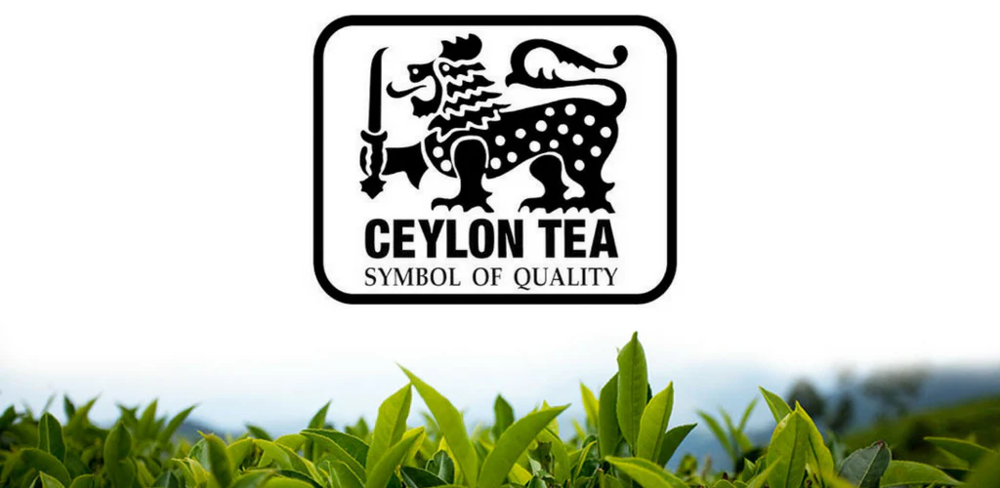
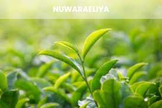
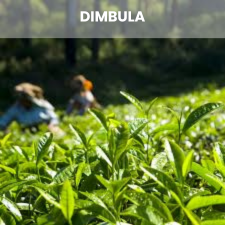
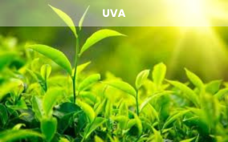
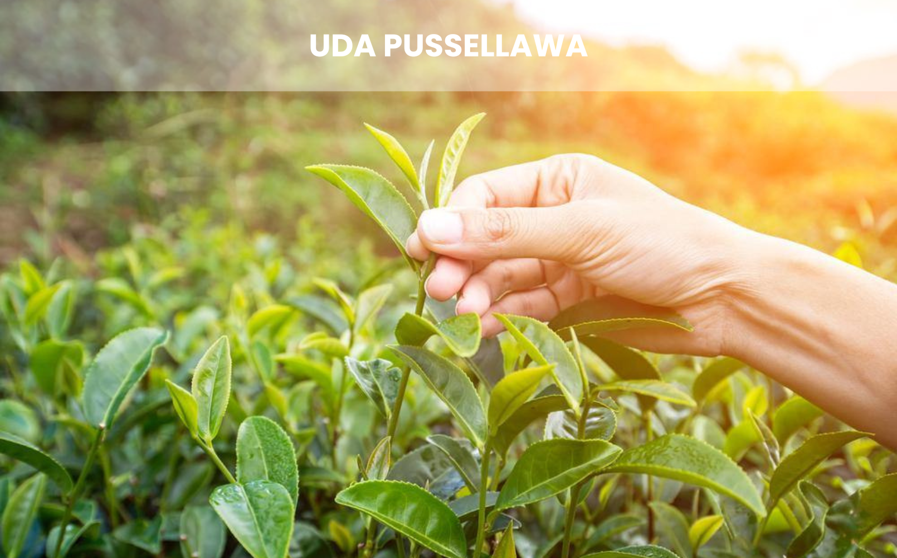
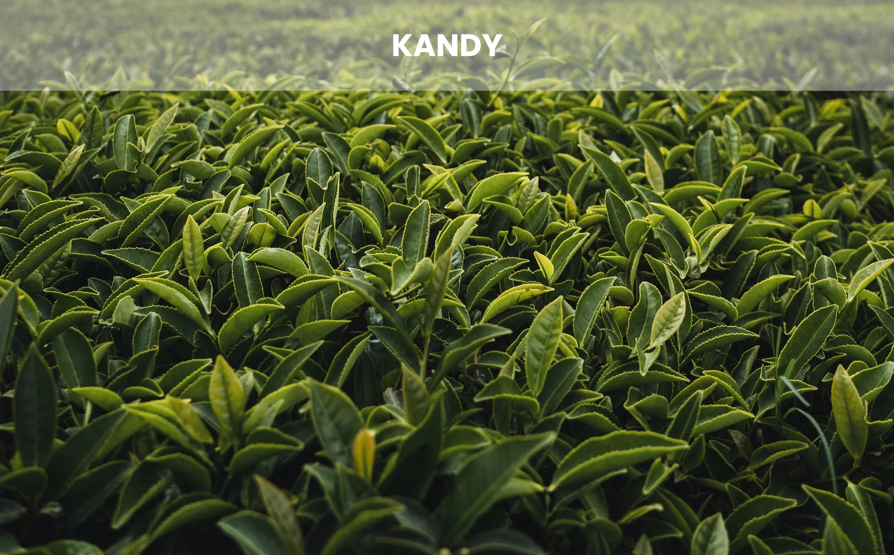
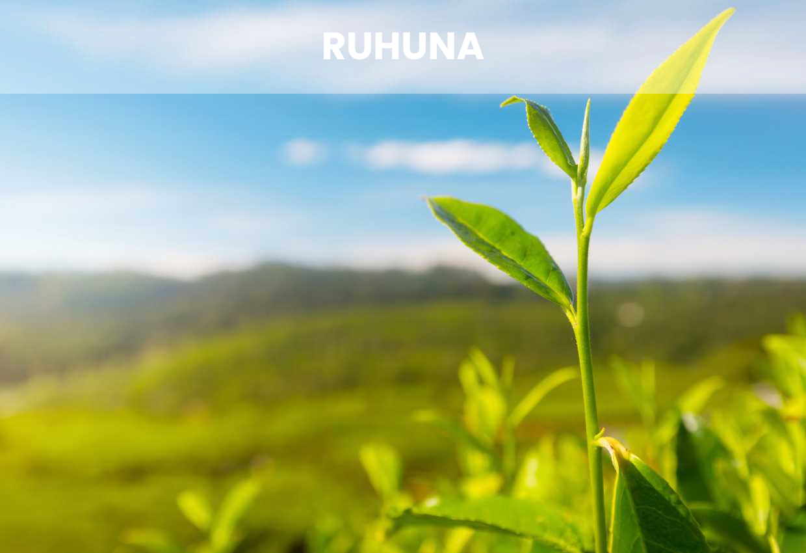
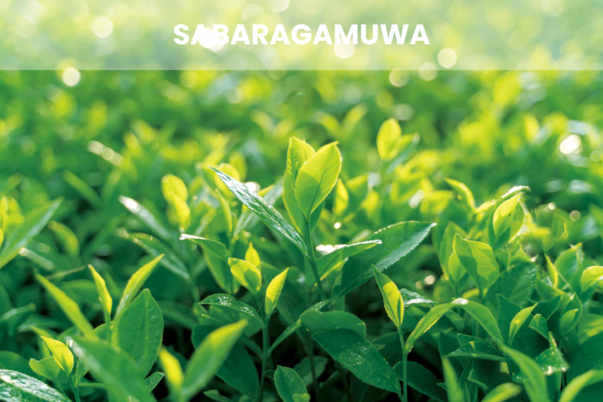

A Legacy Steeping for Over 150 Years
Since James Taylor first planted tea in the Loolecondera estate in 1867, Sri Lanka has become synonymous with the highest quality tea in the world. The unique geography of the island from coastal plains to the high altitude mountains creates a micro-climate perfect for distinct flavor profiles.
Today, Ceylon Tea is more than just a beverage; it is a vital pillar of the Sri Lankan economy and a global symbol of purity and excellence. Every leaf is hand-picked with precision, ensuring that only the finest "two leaves and a bud" make it into your cup.
1867
FIRST ESTATE
4th
GLOBAL EXPORTER
100%
HAND-PICKED
The Tea Regions of Ceylon
The character of our tea is defined by the elevation where it grows. Discover the seven distinct regions that define our world-renowned heritage.

Nuwara Eliya
The "Champagne" of teas; light, delicate, and floral from the highest peaks.

Dimbula
Crisp and clean with a golden-orange hue and refreshing citrus notes.

Uva
Renowned for its exotic, aromatic character and unique mellow flavor.

Uda Pussellawa
A dark and strong brew with subtle rosy highlights and bold character.

Kandy
Full bodied and robust, producing a rich, copper toned infusion.

Ruhuna
Grown in fertile coastal soil, offering deep color and intense strength.

Sabaragamuwa
Sri Lanka's biggest region, known for its stylish long leaf teas and exceptionally dark, rich infusions.